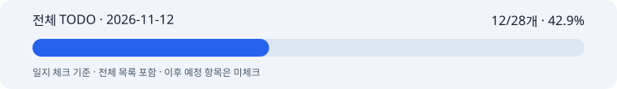

최신 이미지 모듈 게시·Sunburst 2.6 실제 E2E · 사후 기록일 2026-11-12
작업일: 2026-11-12 (KST) · 이름: 박지수 · 팀: 고급프로젝트 2팀.
기록일: 2026-11-12. 누락 일지의 사후 기록이며 원본 작업일·커밋일·기록일을 구분한다. 보고일 말까지 확인 가능한 자료만 사용하고 오늘의 성과를 과거 날짜에 넣지 않는다.
이미지 모듈과 격리 로컬 dev 연결·검증, 공유 체크/일지 갱신 담당.
dev c6820f0의 image_size 입력·영속화·생성/합성 연결을 보완하고 3:4·4:5·9:16 폼 입력 저장200을 확인했다. 기존4:5 해시는 유지한다. 초기 상태 조회가 입력 저장보다 먼저 나가는 LIVE_JOB_NOT_FOUND 422는 별도 미해결이다.
Sunburst2.6과 최신14디멘션 모듈을 연결했다. dev의 monitoring_only 인자 차이를 발견해 기존 명시적 비용 모니터링과 기본 예산 차단·중복 거절을 보존하도록 보완했다.
실제 제품 사진2장으로 입력→실제 분석/기획/카피/검수→카피 승인→이미지 생성→원본 시각 비교→이미지 승인→한국어 A합성→완료 화면→PNG 다운로드를 진행했다. COMPLETED/LIVE, image Provider attempt1건 succeeded를 확인했다.
생성1152×1440, 최종1080×1350. 이미지 큐 단계 약34초이며 순수 모델 지연과 구분한다. 다운로드 SHA와 서버 파일 SHA가 일치한다. 사용량은 저장됐지만 실제 청구액은 미확인이다.
최신 모듈·dev 통합567개 PASS, 별도 비용 호환5개 PASS를 확인했다. 중복 범위는 합산하지 않는다. 기존 SQLite ResourceWarning 한정 제외와 독립 EGM 미실행 범위를 남겼다.
뷰티 feature/image-model에6735e97을 게시하고 로컬 모듈21개와 원격 파일 일치를 확인했다. 이미지 모듈은src/image_generation, dev 연결 차이는 별도 적용 패치다. 원본 사진·생성 PNG·API 키·DB는 Git에 넣지 않았다.
활성 체크: 12/28개 · 42.9%. 이 수치는 일지 체크이며 코드/제품 전체 완성률이나 당일 자기평가가 아니다.
11/05 재분류 이후 현행 MVP·고도화7개·공동 검증/인수만 활성으로 센다. 과거·비적용·보류는 제외하며 전체 목록에 남긴 원문을 보존한다.
활성 체크: 12/28개 · 42.9%

전체 TODO · HTML 전체 목록 · 진행률 데이터 · 날짜별 근거
본인 자기평가: 미확정. 당일 0·25·50·75·100% 평가가 제공되지 않아 임의의 숫자를 만들지 않았다. 확인된 작업 결과는 2번에 적었으며 자동 TODO 비율로 대체하지 않는다.
사용자는 새 시안이 더 낫다고 평가했다. 최신 생성/합성 적용에는 서빙의 두 진입점 연결이 필요함을 설명했고, 사용자는 잇템 추가 연결 변경을 보류했다. 그 요청을 유지한다.
브라우저 내부 탭 활성화와 사용자에게 보이는 Ego 작업 공간 전환은 달랐다. 사용자 시험과 내 E2E 작업ID를 대조해 구분하고 실제 완료 화면을 안내했다. 화면 표시 시도를 성공으로 단정한 설명은 정정했다.
로컬4:5 한 건의 성공은 GCP 배포·전체 비율 품질·법적 검수·팀 UAT·실제 청구 인수 완료가 아니다. 현재 활성28개 중12개만 완료로 유지하고 부분 경로는 별도로 기록한다.
M1 10/30·M2 11/06은 목표일 이력이다. 미확인 표본·합격 기준·청구·공동 인수는 완료로 처리하지 않는다.
실제 완료 화면·최종 광고·다운로드 검증과 변경 범위를 공유했다. 요청에 따라 평일 누락 일지와 노션 연결 plan/models 체크리스트를 갱신한다. 팀원에게 별도 메시지·댓글은 보내지 않는다.
후속 목표: 누락 일지의 날짜별 근거와 원격 게시를 확인한다. 서빙 연결은 재개 요청 전 보류하며 공동 품질·비용·팀 인수 자료를 별도로 확보한다.